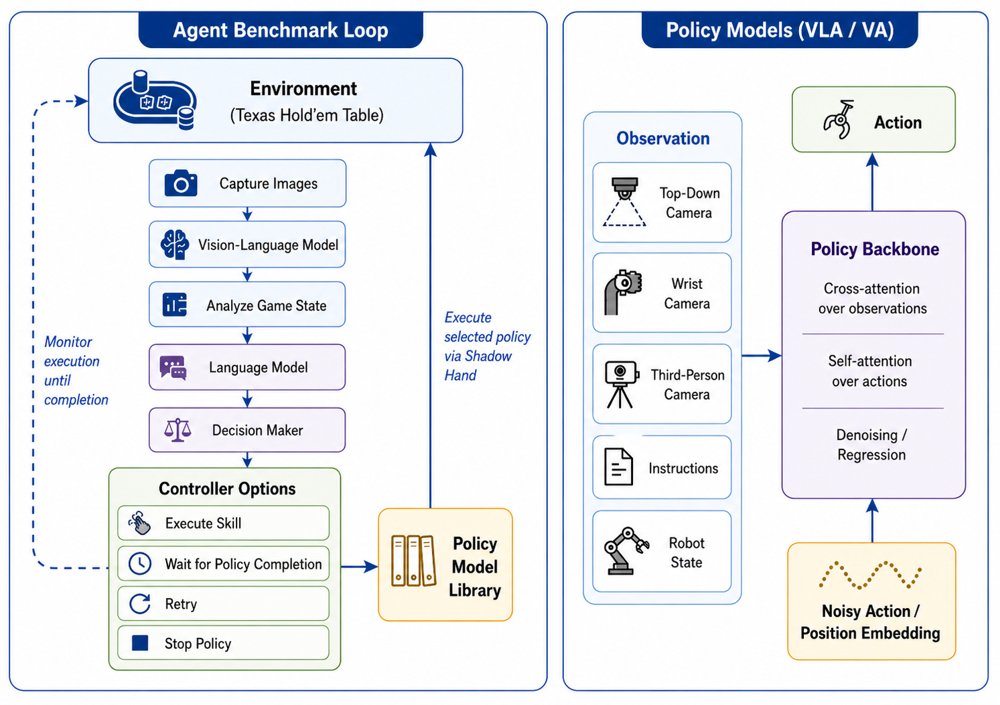

Real Robot Setup
A ShadowHand mounted on a UR10e operates on a standardized card-and-chip table with top-down, third-person, and wrist camera observations.
NeurIPS 2026 Dataset & Benchmark Track
A physical card-and-chip manipulation suite for studying instruction grounding, scene tracking, and fine-grained multi-finger robot control.
Abstract
Evaluating language-conditioned embodied systems in realistic physical scenes remains difficult because existing benchmarks often separate semantic reasoning from dexterous execution. Dexholdem couples semantic grounding, sequential state tracking, and fine-grained multi-finger manipulation in a Texas Hold'em-style tabletop setting.
The benchmark contains 1,470 teleoperated demonstrations across 14 card and chip primitives, with standardized task definitions, shared initial-state randomization, and objective primitive-level success criteria. In completed physical trials over the 14-primitive schedule, the best-performing policy achieves a 47.5% scene-preserving success rate and a 61.2% task completion rate when disruptive completions are also counted.
Benchmark
The task domain uses cards and chips as semantically structured objects. Policies must identify the requested target, execute a precise manipulation primitive, and preserve the tabletop state for subsequent interaction.
A ShadowHand mounted on a UR10e operates on a standardized card-and-chip table with top-down, third-person, and wrist camera observations.
The suite covers card pickup, put-down, reveal, and chip push/pull primitives across four chip denominations.
Success requires both completing the requested primitive and leaving unrelated objects usable for continued interaction.

Each primitive has a canonical instruction template, train/validation demonstrations, and physical rollout schedule.
| Platform | ShadowHand on UR10e, real world |
|---|---|
| Objects | Standard poker cards and 5/10/50/100 chips |
| Observations | Top-down, third-person, wrist RGB-D views plus 30 robot joint states |
| Data Split | 100 train and 5 validation trajectories per primitive |
| Scoring | SPSR and TCR over 80 physical rollouts per policy |
Observation Views


Demos & Videos
Demo videos will appear here as hosted clips for primitive rollouts, contact-rich execution, and policy-comparison failure cases.
Primitive rollout
Fine-grained card contact under instruction-conditioned control.
Contact view
Close-range evidence for grasp, reveal, and placement verification.
Execution trace
Third-person view for arm trajectory and scene disturbance analysis.

Benchmark analysis
Qualitative failures and successes across pretrained and task-trained policies.
Results
SPSR counts only scene-preserving success. TCR also counts disruptive completions where the requested primitive is completed but the scene is no longer normally usable.
| Policy | Family | SP | DC | TF | DF | SPSR | TCR |
|---|---|---|---|---|---|---|---|
| π0.5 | VLA | 38 | 11 | 31 | 0 | ||
| π0 | VLA | 38 | 8 | 33 | 1 | ||
| RDT | Robot-pretrained | 24 | 13 | 40 | 3 | ||
| DP (DINO) | Task-trained | 21 | 8 | 48 | 3 | ||
| DP-Transformer | Task-trained | 11 | 5 | 46 | 18 | ||
| RDT-small | Task-trained | 11 | 3 | 59 | 7 | ||
| ACT | Task-trained | 8 | 4 | 67 | 1 | ||
| BAKU | Task-trained | 5 | 5 | 67 | 3 | ||
| DP-UNet | Task-trained | 1 | 0 | 79 | 0 |

Resources
@misc{dexasholdem2026,
title = {Dexholdem: A real-world ShadowHand benchmark for dexterous tabletop manipulation and embodied agents},
author = {Chen, Feng and Chu, Tianzhe and Sun, Li and Zhou, Pei and Xu, Zhuxiu and Gao, Shenghua and Zhai, Yuexiang and Yang, Yanchao and Ma, Yi},
year = {2026},
note = {NeurIPS 2026 Dataset and Benchmark Track},
url = {https://huggingface.co/datasets/Winniechen2002/TexasPokerRobot}
}